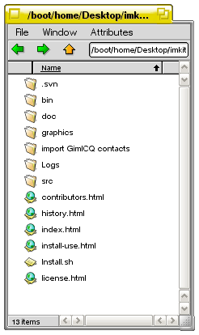
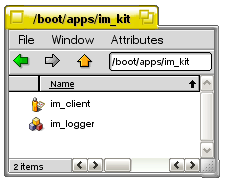
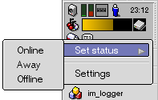
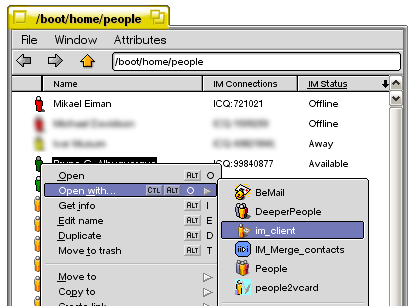

Introduction | Contributors | License | Install and Use | History
There are a few things you need to do before running this alpha:
1) Run the included file "Install.sh". This will install all files needed to run the IM kit in the proper locations.

When the script has finished installing the IM kit, you will get the message: "All done". Press OK to continue. You will now find a folder called im_kit in /boot/apps/im_kit.
You should not have to run these apps manually, they're startet automatically by the im_server when it starts up.

2) To be able to see the new attributes in the Tracker, you need to update your Filetype database. Do this by running BeOS -> Preferences -> File Types, selecting application/Person and adding two extra attributes:
Attribute name: "IM Connections", Internal name: "IM:connections", Attribute type: "String", Editable, Visible, not Extra, Display width: 80 and Display alignment: Left.
Attribute name: "IM Status", Internal name: "IM:status", Attribute type: "String", not Editable, Visible, not Extra, Display width: 80 and Display alignment: Left.
You can now add those columns in a folder where there are People files.
3) To edit your settings for the installed protocol(s), right-click the talk-bubble icon in the Deskbar and select Settings. In the IM Server settings click on the protocol you want to edit.
You can also change the settings for the im_server, for example you can select if you want it to start automatically when you start your computer.
At the moment only the ICQ protocol is supported. Once in the ICQ settings you can add your ICQ id, password, the text encoding you prefer to use and your status. To activate the changes to have made to the settings, press Apply.
You can also set your online status for all protocols at once using the Deskbar menu:

Currently only three different status modes are supported: Online (Available), Away and Offline.
4) If you receive a message from somebody, a new window will open where you can chat with them and an alert will appear in the Deskbar. The IM kit's replicant will blink.
Also, since the kit doesn't know which person is using a UIN you get a message from, it will create a new People-file in you ~/people folder with the relevant UIN filled in. It will also get the person's name, nick and email if they're available.
5) If you want, you can use one of the provided Tracker add-ons to merge two People files, this is useful when you already have a People file for someone and get a new one created by the IM server, and you want to combine the two.
Try it out on a copy of a real file before using it for real, since it's a destructive operation that can't be undo it's best if you try it on non-vital files first.
6) There are two ways to start a chat in the IM kit:
The first way is simply to choose a Person file and open it with im_client.

The second way is to use a Tracker add-on to start a conversation with that person. Select the file and use the add-on named "IM Start conversation". and you will get a new chat window. The other way is to choose a Person file and open it with im_client. Remember: To be able to start a conversation this second way, the im_client must be running. As stated in 1) above, you should not have to run im_client manually.
Eighter way you choose to start the conversation, a message window will appear. To send a message, press CMD-Enter.
7) If you want to add a new contact, you can do this by creating a new People file and setting the IM:connections attribute. To add the project leader you'd set the attribute to ICQ:721021. The format is pretty simple, <protocol>:<id>, and if you have several connections for the same person you separate the connections with a ;
Running Install.sh should be enough to safely upgrade the Kit. When running the script, you will be notified that you are about to overwrite your existing version of the kit. Press Continue to upgrade or Cancel to abort the script.